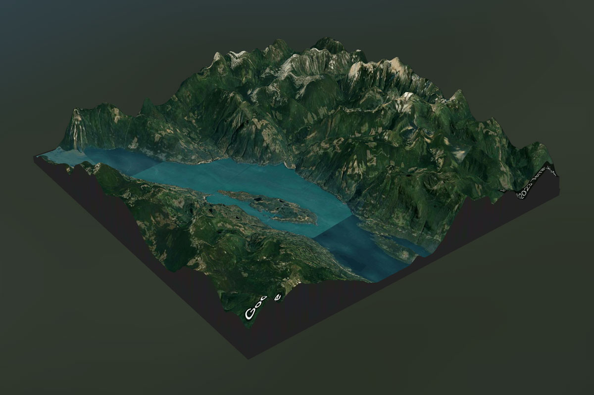
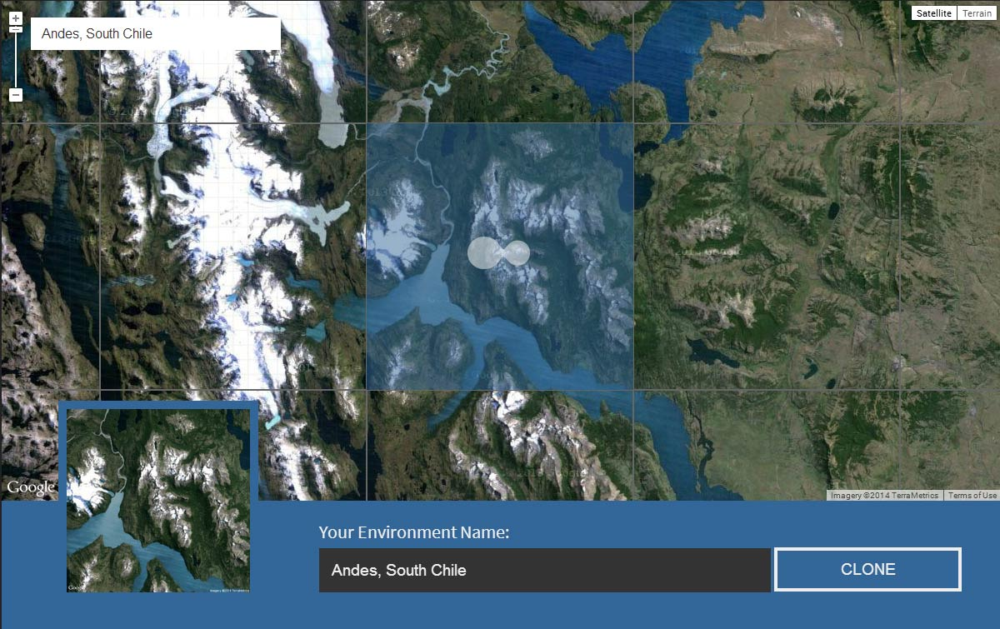
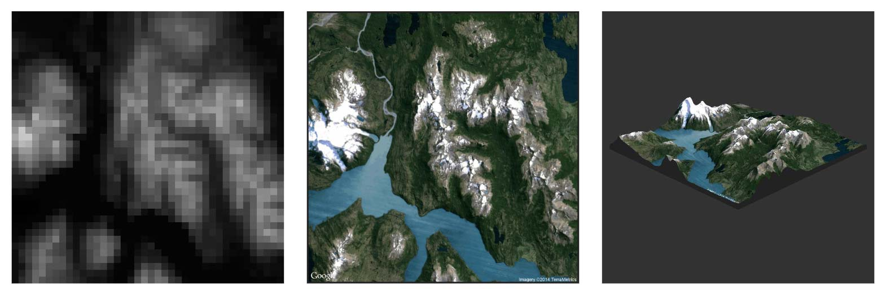
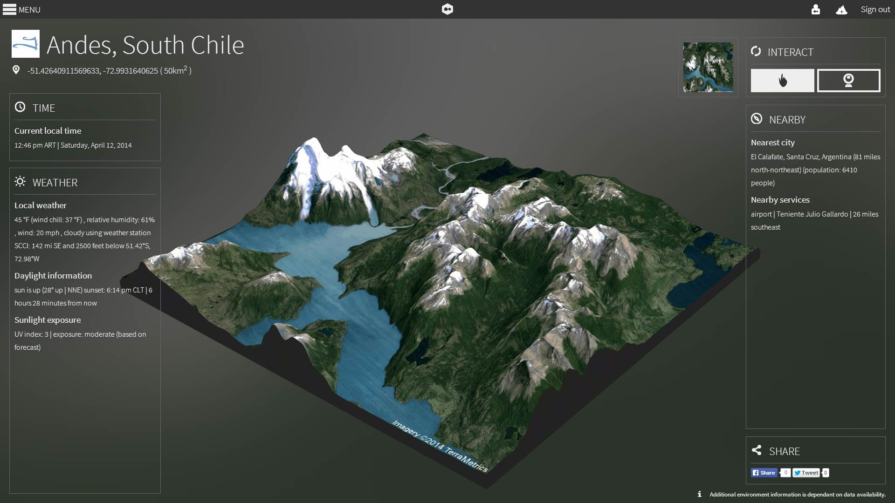
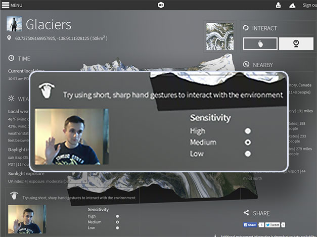
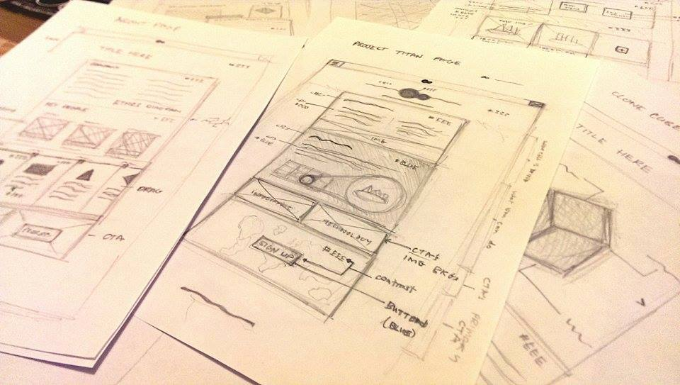
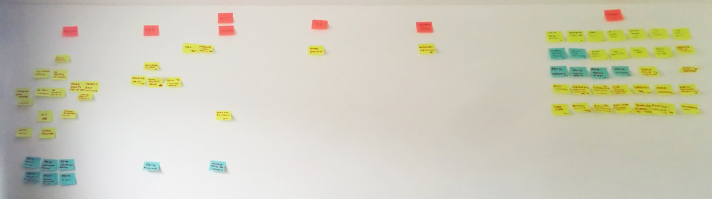
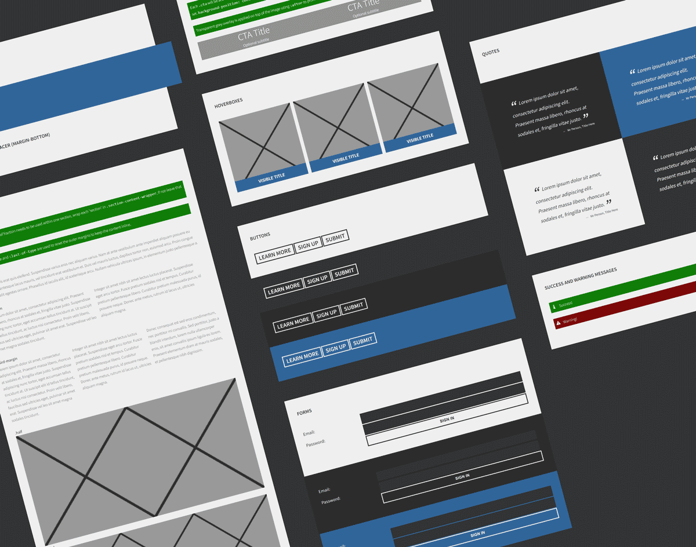

The use of innovative web technologies, flat design and modern APIs has helped it stand the test of time. This project includes programmatic generation of 3D data, rendering 3D models in the browser, augmented information from WolframAlpha, webcam gesture interaction and much more!
First, the user is required to zoom in and select a 50km2 tile on the map. Tiles with varied elevation such as mountains produce more interesting looking models.
  Three.js is used to render the 3D scene. We implemented controls to rotate and zoom the model with the mouse and keyboard.

We leveraged WolframAlpha's API to augment the UI with live data relating to the physical location such as time, weather and nearby attractions.

The project was designed using wireframes, mockups and user feedback to iteratively make improvements.
We managed the project with a physical kanban board and regular standups. Features were prioritised into three categories to ensure all the vital tasks were completed. Development implemented a Git workflow with regular code reviews.
 This project was awarded the Sagittarius Digital Prize for The Best Integrated Multimedia Project in Multimedia Technology and Design. You can read the artical here